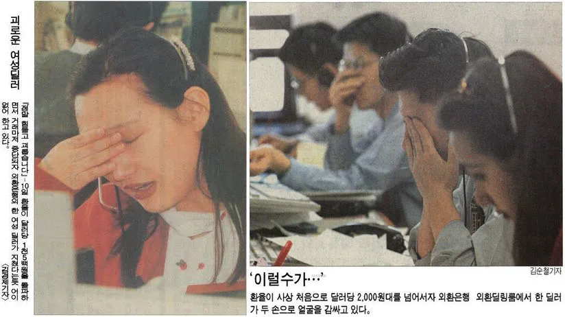

1997년부터 아시아 지역을 중심으로 발생했던 외환 유동성 위기를 통칭하는 말. 외환 위기 사태 발생 직전까지 문민정부의 금융 정책으로 인해 각 기업들은 무분별한 차입에 의존하며 무분별한 과잉투자를 벌였다. 동시에 국외적으로는 태국의 고정환율제 포기로 인해 환율을 이용한 외국 자본의 차익 실현으로 동남아시아에 통화 위기가 발생하였고 동북아시아를 거쳐 세계 경제에 불안을 가져왔다. 이러한 경제 불안은 한국뿐만 아니라 아시아 전체에 경제 위기를 불러왔다. 한국에서는 단순히 IMF, 외환위기 등으로 지칭하는 경우가 많지만 세계적으로는 1997년 아시아 금융 위기(1997 Asia Financial Crisis)로 불린다. 이 시기에 한국만 위기를 겪은 게 아니라 아시아 전반에 파급효과를 일으켰기 때문. 인도네시아와 태국이 타격을 가장 많이 받은 국가였고[6] 한국은 단순 지표상으로 앞의 두 국가보다는 덜했으나 역시 엄청난 위기를 겪었다. 홍콩, 북한, 라오스, 말레이시아, 필리핀, 몽골, 캄보디아, 마카오 등도 침체에 시달렸다. 브루나이, 중국, 싱가포르, 대만, 베트남 또한 어려움을 겪었지만 그나마 영향을 덜 받았다. 그리고 당시 아시아의 유일한 선진국이었던 일본에도 영향을 주었을 정도로 파급력이 엄청나게 큰 사건이다. 일본은 90년대 첫 새해부터 이미 침체에 들어가 있었기에 영향은 아주 크지 않았지만 1995년을 기점으로 조금이나마 회복세에 접어든 경제성장률에도 불구하고 소비세를 5%로 인상하면서 소비 심리가 급속히 위축되었고 금융회사들도 잇따라 도산하는 사태가 발생하여 경제 회복에 대한 기대감은 확 꺾여 버리고 말았다. 결국 일본은 1998년도에 마이너스 성장률을 기록하고 잃어버린 10년 초-중기에 미약하게 증가했던 실질 임금과 가처분 소득도 1997년에 고점을 찍고 다시 하락세로 들어서게 되면서 경기 침체를 연장하게 되었다. 따라서 이 금융 위기는 경기 불황에서 다시 일어서려던 일본을 끌어내리는 데 한몫했다는 점에서 여파가 크다고 할 수 있으며 장기간의 불황이 넷 우익, 일본의 우경화의 간접적인 요인이 된다고 볼 수 있다.
